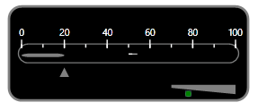

You have now created a windows phone application and deployed Essential Gauge. Let’s see how to create a Linear Gauge in this application. This is done either by using XAML code or with C# code.
Step-by-step instructions for creating a Linear Gauge
1. Add the Linear Gauge control to the Panel as follows (the default orientation of the gauge is Vertical).
|
[XAML]
<syncfusion:LinearGauge Height="450" Width="170" VerticalAlignment="Top" OuterFrameBrush="Black" Orientation="Horizontal" x:Name="LinearGauge1" RadiusX="20" RadiusY="20" BorderBrush="Gray" BorderThickness="4" OuterFrameOffset="20"/>
|
|
[C#]
LinearGauge lineargauge = new LinearGauge(); lineargauge.Width = 150; lineargauge.Height = 350; lineargauge.Orientation = GaugeOrientation.Horizontal; lineargauge.OuterFrameBrush = new SolidColorBrush(Colors.Black); lineargauge.BorderBrush = new SolidColorBrush(Colors.Black); lineargauge.RadiusX = 20; lineargauge.RadiusY = 20; LayoutRoot.Children.Add(lineargauge); |
2. To add a Scale to the Linear Gauge in Windows Phone Application, use the below code:
|
[XAML]
<syncfusion:LinearGauge OuterFrameBrush="Black" Height="180" Orientation="Horizontal" BorderBrush="Gray" BorderThickness="4" x:Name="LinearGauge1" RadiusX="20" RadiusY="20" InnerFrameOffset="15" OuterFrameOffset="20"> <syncfusion:LinearGauge.Scales> <syncfusion:LinearScale Minimum="0" Maximum="100" Foreground="White" MajorIntervalValue="20" MinorIntervalValue="10" ScaleBarSize="30" ScaleBarLength="350" ShadowOffset="4" BorderBrush="#7B7C7C" BorderThickness="2" RadiusX="15" RadiusY="15"/> </syncfusion:LinearGauge.Scales> </syncfusion:LinearGauge>
|
|
[C#]
LinearGauge lineargauge = new LinearGauge(); lineargauge.Width = 150; lineargauge.Height = 350; lineargauge.Orientation = GaugeOrientation.Horizontal; lineargauge.BorderBrush = new SolidColorBrush(Colors.Gray); lineargauge.OuterFrameBrush = new SolidColorBrush(Colors.Black); lineargauge.RadiusX = 20; lineargauge.RadiusY = 20;
LinearScale linearscale = new LinearScale(); linearscale.ScaleBarSize = 15; linearscale.ScaleBarLength = 250; linearscale.MajorIntervalValue = 20; linearscale.MinorIntervalValue = 10; linearscale.Minimum = 0; linearscale.Maximum = 100; linearscale.BorderBrush = new SolidColorBrush(Colors.Black); linearscale.BorderThickness = new Thickness(2); |
3. To add a Pointer to the Linear Gauge in Windows Phone Application, use the below code:
|
[XAML]
<syncfusion:LinearGauge Height="180" OuterFrameBrush="Black" Orientation="Horizontal" BorderThickness="4" BorderBrush="Gray" x:Name="LinearGauge1" RadiusX="20" RadiusY="20" OuterFrameOffset="20"> <syncfusion:LinearGauge.Scales> <syncfusion:LinearScale Minimum="0" Maximum="100" Foreground="White" MajorIntervalValue="20" MinorIntervalValue="10" ScaleBarSize="30" ScaleBarLength="350" ShadowOffset="4" BorderBrush="#7B7C7C" BorderThickness="2" RadiusX="15" RadiusY="15"> <syncfusion:LinearScale.Ticks> <syncfusion:MarkTickSet Background="#7B7C7C" TickHeight="6" TickWidth="2" DistanceFromScale="12" TickPlacement="Cross" TickShape="Rectangle" TickStyle="MinorTick" /> <syncfusion:MarkTickSet Background="Black" Opacity="0.7" TickHeight="14" TickWidth="2" TickPlacement="Cross" TickShape="Rectangle" DistanceFromScale="15" TickStyle="MajorTick"/> <syncfusion:LabelTickSet Foreground="Black" TickPlacement="Inside" DistanceFromScale="10" TickStyle="MajorTick"/> </syncfusion:LinearScale.Ticks> <syncfusion:LinearScale.Pointers> <syncfusion:LinearBarPointer Background="Brown" BorderBrush="Transparent" BorderThickness="0" Height="10" Width="7" PointerWidth="10" Value="20"> </syncfusion:LinearBarPointer> <syncfusion:LinearMarkerPointer MarkerStyle="Triangle" Background="Brown" Height="15" Width="15" PointerLength="15" PointerWidth="15" Value="20" PointerPlacement="Outside"/> </syncfusion:LinearScale.Pointers> </syncfusion:LinearScale> </syncfusion:LinearGauge.Scales> </syncfusion:LinearGauge>
|
|
[C#]
LinearGauge lineargauge = new LinearGauge(); lineargauge.Width = 150; lineargauge.Height = 350; lineargauge.Orientation = GaugeOrientation.Horizontal; lineargauge.BorderBrush = new SolidColorBrush(Colors.Gray); lineargauge.OuterFrameBrush = new SolidColorBrush(Colors.Black); lineargauge.RadiusX = 20; lineargauge.RadiusY = 20;
LinearScale linearscale = new LinearScale(); linearscale.ScaleBarSize = 15; linearscale.ScaleBarLength = 250; linearscale.MajorIntervalValue = 20; linearscale.MinorIntervalValue = 10; linearscale.Minimum = 0; linearscale.Maximum = 100; linearscale.BorderBrush = new SolidColorBrush(Colors.Black); linearscale.BorderThickness = new Thickness(2);
MarkTickSet minormarktickset = new MarkTickSet(); minormarktickset.TickHeight = 6; minormarktickset.TickWidth = 2; minormarktickset.DistanceFromScale = 5; minormarktickset.Background = new SolidColorBrush(Colors.Brown); minormarktickset.TickStyle = TickStyle.MinorTick; minormarktickset.TickShape = TickShape.Rectangle; minormarktickset.TickPlacement = ScalePlacement.Cross; linearscale.Ticks.Add(minormarktickset);
MarkTickSet marktickset = new MarkTickSet(); marktickset.TickHeight = 12; marktickset.TickWidth = 2; marktickset.DistanceFromScale = 10; marktickset.Background = new SolidColorBrush(Colors.Black); marktickset.TickStyle = TickStyle.MajorTick; marktickset.TickShape = TickShape.Rectangle; marktickset.TickPlacement = ScalePlacement.Cross; linearscale.Ticks.Add(marktickset);
LabelTickSet labeltickset = new LabelTickSet(); labeltickset.DistanceFromScale = 25; labeltickset.Foreground = new SolidColorBrush(Colors.White); labeltickset.TickStyle = TickStyle.MajorTick; labeltickset.FontSize = 12; labeltickset.TickPlacement = ScalePlacement.Cross; linearscale.Ticks.Add(labeltickset);
LinearMarkerPointer linearmarkerpointer = new LinearMarkerPointer(); linearmarkerpointer.PointerLength = 20; linearmarkerpointer.PointerPlacement = ScalePlacement.Outside; linearmarkerpointer.PointerWidth = 10; linearmarkerpointer.Value = 20; linearmarkerpointer.Background = new SolidColorBrush(Colors.Orange); linearmarkerpointer.MarkerStyle = MarkerStyle.Triangle; linearscale.Pointers.Add(linearmarkerpointer);
LinearBarPointer linearbarpointer = new LinearBarPointer(); linearbarpointer.PointerWidth = 10; linearbarpointer.Background = new SolidColorBrush(Colors.Orange); linearbarpointer.Value = 20; linearscale.Pointers.Add(linearbarpointer); |
4. The following code example illustrates how to add the Linear Gauge control to the Windows Phone application:
|
[XAML]
<syncfusion:LinearGauge OuterFrameBrush="Black" Orientation="Horizontal" x:Name="LinearGauge1" RadiusX="20" RadiusY="20" BorderBrush="Gray" BorderThickness="4" Height="150"> <syncfusion:LinearGauge.Scales> <syncfusion:LinearScale Minimum="0" Maximum="100" Foreground="White" MajorIntervalValue="20" MinorIntervalValue="10" ScaleBarSize="30" ScaleBarLength="350" ShadowOffset="4" BorderBrush="#7B7C7C" BorderThickness="2" RadiusX="15" RadiusY="15"> <syncfusion:LinearScale.Ticks> <syncfusion:MarkTickSet Background="#7B7C7C" TickHeight="6" TickWidth="2" DistanceFromScale="12" TickPlacement="Cross" TickShape="Rectangle" TickStyle="MinorTick" /> <syncfusion:MarkTickSet Background="Black" Opacity="0.7" TickHeight="14" TickWidth="2" TickPlacement="Cross" TickShape="Rectangle" DistanceFromScale="15" TickStyle="MajorTick"/> <syncfusion:LabelTickSet Foreground="Black" TickPlacement="Inside" DistanceFromScale="10" TickStyle="MajorTick"/> </syncfusion:LinearScale.Ticks> <syncfusion:LinearScale.Pointers> <syncfusion:LinearBarPointer Background="Gray" BorderBrush="Transparent" BorderThickness="0" Height="10" Width="7" PointerWidth="10" Value="20"> </syncfusion:LinearBarPointer> <syncfusion:LinearMarkerPointer MarkerStyle="Triangle" Background="Gray" Height="15" Width="15" PointerLength="15" PointerWidth="15" Value="20" PointerPlacement="Outside"/> </syncfusion:LinearScale.Pointers> <syncfusion:LinearScale.Ranges> <syncfusion:LinearRange Background="Gray" RangePosition="Outside" DistanceFromScale="10" StartWidth="5" EndWidth="15" StartValue="70" EndValue="100" > </syncfusion:LinearRange> </syncfusion:LinearScale.Ranges> </syncfusion:LinearScale> </syncfusion:LinearGauge.Scales> <syncfusion:LinearGauge.StateIndicators> <syncfusion:StateIndicator Name="m_indicator" Location="75,93" IndicatorHeight="10" IndicatorWidth="10" FontSize="12" FontFamily="Verdana" IndicatorStyle="CircularLED" Text="Normal" Background="Green" ActiveBackgroundBrush="Red" ActiveText="High"> <syncfusion:StateIndicator.StateRanges> <syncfusion:StateRange StartValue="70" EndValue="100" /> </syncfusion:StateIndicator.StateRanges> </syncfusion:StateIndicator> </syncfusion:LinearGauge.StateIndicators> <syncfusion:LinearGauge.CustomLabels> <syncfusion:GaugeLabel Text="Custom Label" FontSize="12" Foreground="Black" Location="80,65"/> </syncfusion:LinearGauge.CustomLabels> </syncfusion:LinearGauge>
|
|
[C#]
LinearGauge lineargauge = new LinearGauge(); lineargauge.Width = 150; lineargauge.Height = 350; lineargauge.Orientation = GaugeOrientation.Horizontal; lineargauge.Background = new SolidColorBrush(Colors.Gray); lineargauge.InnerFrameBrush = new SolidColorBrush(Colors.LightGray); lineargauge.OuterFrameBrush = new SolidColorBrush(Colors.Black); lineargauge.OuterFrameOffset = 20; lineargauge.InnerFrameOffset = 10; lineargauge.RadiusX = 20; lineargauge.RadiusY = 20;
LinearScale linearscale = new LinearScale(); linearscale.ScaleBarSize = 15; linearscale.ScaleBarLength = 250; linearscale.MajorIntervalValue = 20; linearscale.MinorIntervalValue = 10; linearscale.Minimum = 0; linearscale.Maximum = 100; linearscale.BorderBrush = new SolidColorBrush(Colors.Black); linearscale.BorderThickness = new Thickness(2);
MarkTickSet minormarktickset = new MarkTickSet(); minormarktickset.TickHeight = 6; minormarktickset.TickWidth = 2; minormarktickset.DistanceFromScale = 5; minormarktickset.Background = new SolidColorBrush(Colors.Brown); minormarktickset.TickStyle = TickStyle.MinorTick; minormarktickset.TickShape = TickShape.Rectangle; minormarktickset.TickPlacement = ScalePlacement.Cross; linearscale.Ticks.Add(minormarktickset);
MarkTickSet marktickset = new MarkTickSet(); marktickset.TickHeight = 12; marktickset.TickWidth = 2; marktickset.DistanceFromScale = 10; marktickset.Background = new SolidColorBrush(Colors.Black); marktickset.TickStyle = TickStyle.MajorTick; marktickset.TickShape = TickShape.Rectangle; marktickset.TickPlacement = ScalePlacement.Cross; linearscale.Ticks.Add(marktickset);
LabelTickSet labeltickset = new LabelTickSet(); labeltickset.DistanceFromScale = 25; labeltickset.Foreground = new SolidColorBrush(Colors.White); labeltickset.TickStyle = TickStyle.MajorTick; labeltickset.FontSize = 12; labeltickset.TickPlacement = ScalePlacement.Cross; linearscale.Ticks.Add(labeltickset);
LinearMarkerPointer linearmarkerpointer = new LinearMarkerPointer(); linearmarkerpointer.PointerLength = 20; linearmarkerpointer.PointerPlacement = ScalePlacement.Outside; linearmarkerpointer.PointerWidth = 10; linearmarkerpointer.Value = 20; linearmarkerpointer.Background = new SolidColorBrush(Colors.Orange); linearmarkerpointer.MarkerStyle = MarkerStyle.Triangle; linearscale.Pointers.Add(linearmarkerpointer);
LinearBarPointer linearbarpointer = new LinearBarPointer(); linearbarpointer.PointerWidth = 10; linearbarpointer.Background = new SolidColorBrush(Colors.Orange); linearbarpointer.Value = 20; linearscale.Pointers.Add(linearbarpointer);
LinearRange linearrange = new LinearRange(); linearrange.StartWidth = 5; linearrange.EndWidth = 10; linearrange.StartValue = 70; linearrange.EndValue = 100; linearrange.DistanceFromScale = 5; linearrange.Background = new SolidColorBrush(Colors.Blue); linearrange.RangePosition = ScalePlacement.Outside; linearscale.Ranges.Add(linearrange);
lineargauge.Scales.Add(linearscale);
StateIndicator stateindicator = new StateIndicator(); stateindicator.Background = new SolidColorBrush(Colors.Green); stateindicator.ActiveBackgroundBrush = new SolidColorBrush(Colors.Red); stateindicator.Text = "low"; stateindicator.ActiveText = "high"; stateindicator.IndicatorWidth = 8; stateindicator.IndicatorHeight = 8; stateindicator.Location = new Point(80, 90); StateRange staterange = new StateRange(70, 100); stateindicator.StateRanges.Add(staterange); lineargauge.StateIndicators.Add(stateindicator);
GaugeLabel gaugelabel = new GaugeLabel(); gaugelabel.Text = "Custom Label"; gaugelabel.FontSize = 12; gaugelabel.Location = new Point(80, 55); gaugelabel.Foreground = new SolidColorBrush(Colors.Black); lineargauge.CustomLabels.Add(gaugelabel);
GaugeImage gaugeImage = new GaugeImage(); Uri uri = new Uri("Image/synclogo.png", UriKind.Relative); gaugeImage.ImageSource = new BitmapImage(uri); gaugeImage.ImageWidth = 80; gaugeImage.ImageHeight = 20; gaugeImage.Location = new Point(15, 20); lineargauge.Images.Add(gaugeImage);
LayoutRoot.Children.Add(lineargauge); |

Figure 49: Linear Gauge Control